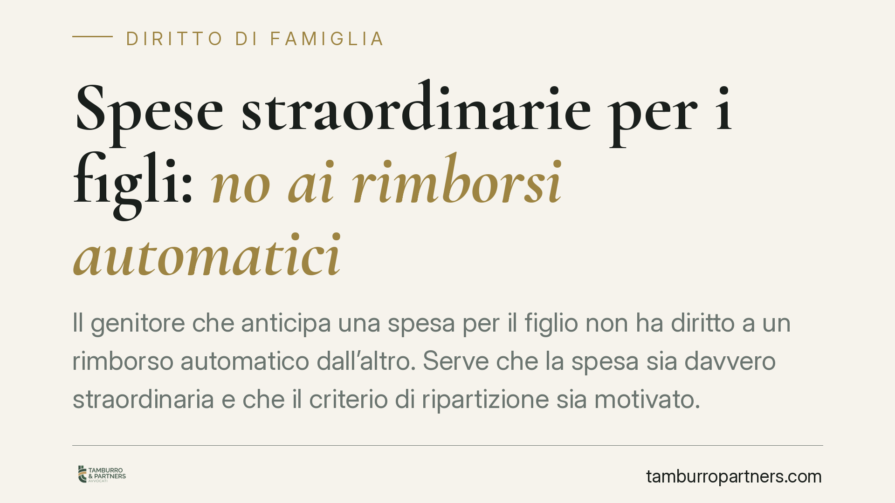

Spese straordinarie per i figli: no ai rimborsi automatici
Il genitore che anticipa una spesa per il figlio non ha diritto a un rimborso automatico dall'altro. Serve che la spesa sia davvero straordinaria e che il criterio di ripartizione sia motivato. Un principio consolidato che tutela entrambi i genitori e impone rigore su consenso preventivo e documentazione. Vediamo cosa significa in concreto.

Il punto della questione
Le spese per i figli si dividono in due categorie. Le spese ordinarie sono ricomprese nell'assegno di mantenimento: vitto, abbigliamento, materiale scolastico corrente, ricariche telefoniche, attività ricreative abituali. Le spese straordinarie, invece, restano fuori dall'assegno perché imprevedibili, occasionali o comunque di rilievo economico non contenibile nel contributo periodico.
Proprio perché eccezionali, le spese straordinarie non si presumono. Chi le anticipa non può pretendere che l'altro genitore paghi la propria quota in modo meccanico, sulla sola base della ricevuta. La giurisprudenza è ferma nel richiedere una verifica di merito, sia sulla natura della spesa sia sul criterio con cui viene divisa.
Inquadramento normativo
Il riferimento è l'art. 337 ter c.c., che disciplina i doveri dei genitori verso i figli in caso di separazione e affida al giudice la determinazione delle modalità di contributo al mantenimento. La norma distingue il mantenimento ordinario dalle spese ulteriori, che vanno regolate secondo criteri di proporzionalità ai redditi.
Sul versante processuale, quando il giudice liquida un rimborso di spese straordinarie deve spiegare due cose distinte: perché quella spesa è straordinaria e con quale criterio la ripartisce tra i genitori. Una motivazione che si limita a formule di stile o a un rinvio generico è considerata "apparente", cioè priva del contenuto minimo richiesto. Questo vizio comporta la nullità della sentenza ai sensi dell'art. 132, comma 2, n. 4 c.p.c., denunciabile in cassazione ex art. 360, comma 1, n. 4 c.p.c. Le Sezioni Unite hanno più volte ricondotto la questione al "minimo costituzionale" della motivazione: sotto quella soglia, la decisione è nulla.
Cosa cambia per i genitori
L'orientamento ha una ricaduta pratica precisa. Non basta produrre lo scontrino o la fattura per ottenere il rimborso della quota. Occorre dimostrare che la spesa era effettivamente straordinaria e, dove previsto dal titolo (sentenza o accordo di separazione), che è stata concordata o comunque necessaria e non rinviabile.
Molti provvedimenti prevedono una clausola di consenso preventivo: prima di sostenere la spesa straordinaria, il genitore deve informare l'altro e raccogliere l'assenso, salvo i casi di urgenza. Quando questa clausola esiste, la spesa affrontata senza consenso rischia di restare a carico di chi l'ha decisa unilateralmente.
La giurisprudenza consolidata distingue inoltre tra spese straordinarie che richiedono il previo accordo (per la loro rilevanza o opinabilità: un corso costoso, una scuola privata) e spese che, per necessità e prevedibilità, il genitore può affrontare autonomamente salvo rimborso (una cura medica indifferibile). La distinzione conta perché sposta l'onere di provare la buona fede e la necessità della decisione.
Cosa fare in concreto
- Chiedete sempre il consenso preventivo all'altro genitore quando il titolo lo impone, per iscritto e con congruo anticipo: email o messaggi datati sono la prova più semplice.
- Conservate la documentazione completa: fattura o ricevuta intestata, prescrizione medica, iscrizione, preventivo. Uno scontrino anonimo non basta a dimostrare né la spesa né la sua natura.
- Distinguete le voci: separate ciò che rientra nell'assegno di mantenimento da ciò che è realmente straordinario. Non chiedete rimborsi per spese già coperte dal contributo ordinario.
- Definite in anticipo i criteri: se state redigendo o rinegoziando le condizioni di separazione, chiedete che il testo elenchi le spese straordinarie e fissi le percentuali di ripartizione. Un accordo dettagliato previene il contenzioso.
- Non attendete l'accumulo: sollecitate il rimborso in tempi ragionevoli, con richiesta scritta. Ritardi lunghi indeboliscono la posizione e complicano la prova.
Un principio, non una penalizzazione
Escludere il rimborso automatico non significa lasciare senza tutela chi anticipa le spese. Significa richiedere che ogni voce sia verificabile e che le decisioni economiche più rilevanti restino condivise. È una garanzia per entrambi i genitori: chi anticipa sa cosa deve provare, chi paga sa perché sta pagando. La regolarità nella gestione delle spese, più della singola contestazione, resta lo strumento migliore per evitare il conflitto.
---
Contributo informativo a cura di Tamburro & Partners Avvocati - Avv. Giuseppe Tamburro. Non costituisce parere legale.
Ogni famiglia ha il suo equilibrio.
Separazione, divorzio, affidamento, assegno: se vuoi un confronto riservato su una specifica situazione, scrivi allo studio. Ti rispondiamo entro un giorno lavorativo.